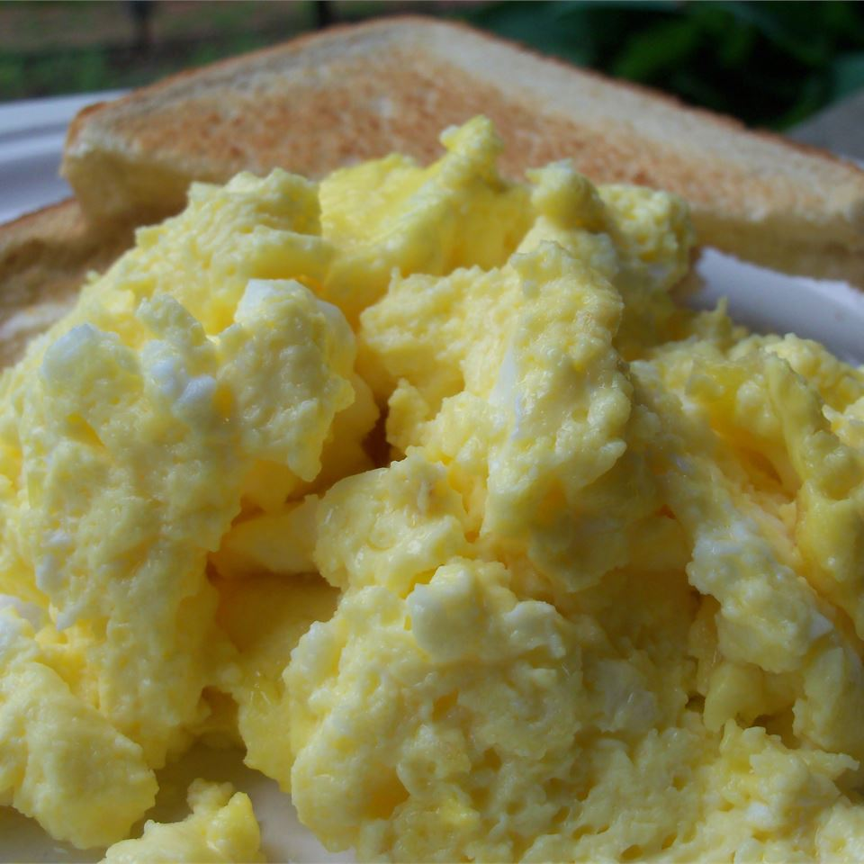

Oven Scrambled Eggs

These light and fluffy scrambled eggs are a snap to put together for
a big crowd.
I usually make 2 pans for our Christmas Brunch,
and I never have much left over!
Ingredients
- ½ cup butter or margarine, melted
- 24 eggs
- 2¼ teaspoons salt
- 2½ cups milk
Steps
- Preheat the oven to 350 degrees F (175 degrees C).
- Pour melted butter into a glass 9x13 inch baking dish.
- In a large bowl, whisk together eggs and salt until well blended.
- Gradually whisk in milk.
- Pour egg mixture into the baking dish.
- Bake uncovered for 10 minutes, then stir, and bake an additional
10 to 15 minutes, or until eggs are set.
- Serve immediately.